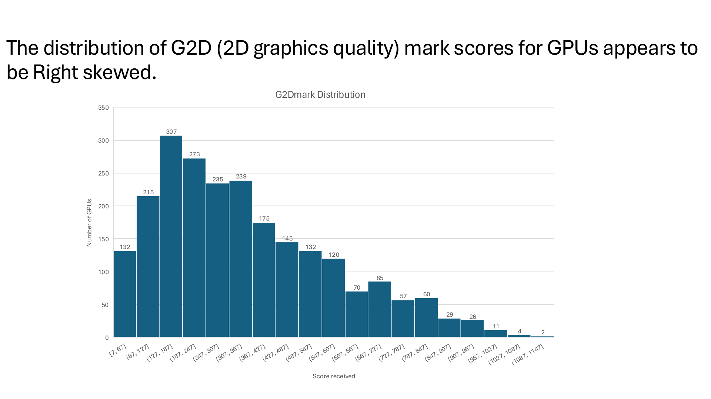

Projects
Engineering analysis, data visualization, and teamwork
INEG 21003 · Fall 2026
Data Visualization for GPUs Since 2009
Team: Christopher Espina, Hudson Wood, David Williams, Israel Klebanoff
Our four assertion–evidence charts explore graphics benchmark scores, GPU power efficiency, average manufacturer compute performance, and prices over time.
